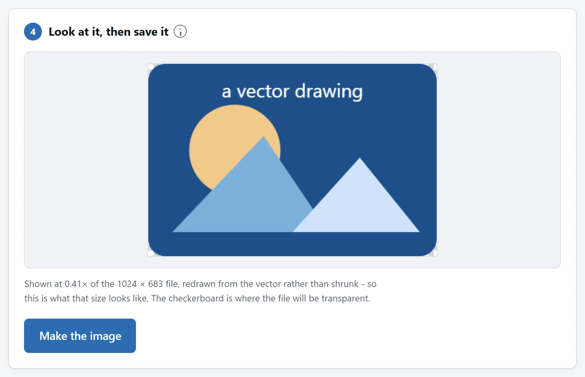
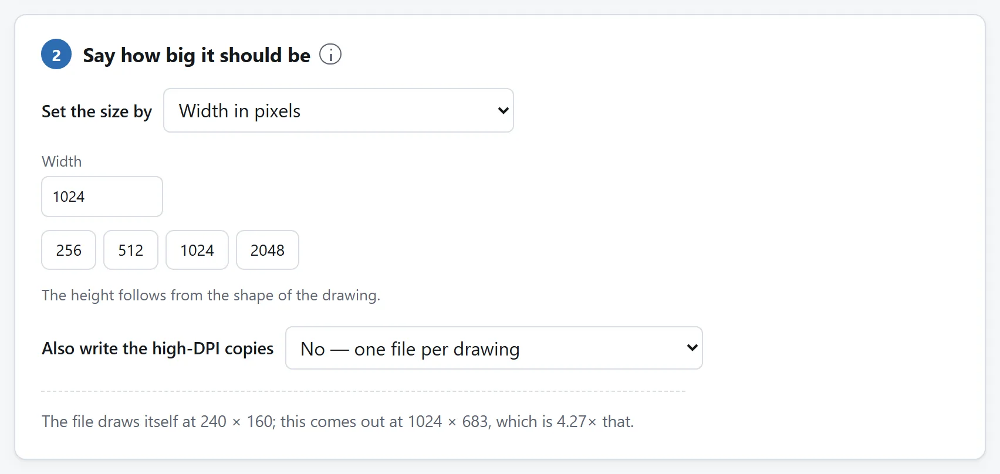

先说结论
打开 SVG 转图片，把文件丢进去，说个尺寸。要是没人告诉你该多大，最长边 1024 像素是个不错的默认值：几乎什么场合都够用，又还发得动邮件。格式留 PNG，背景留透明，把文件拿走。
下面讲的是这个默认值不够用的情况：人家已经给了你确切数字、这张图要拿去印，或者转出来看着不对劲。

文档标志和不同密度的屏幕素材
幻灯片或文档不接受 SVG。按使用宽度导出 PNG，为屏幕或印刷留足像素。标志用于不同底色时保留透明，目标要求不透明才设背景。插入前查看预览，检查字体替换和外链图形缺失。
不同屏幕密度的一组图标。1x 设为显示尺寸，同次生成 @2x 和 @3x。来源尺寸一致的一组 SVG 用倍数保留尺寸关系；最长边上限则让不同形状都落在同一最大范围内。检查最小副本是否丢失笔画。导出再大也不能让精细符号在极小位置里变得清楚。
尺寸为什么是你的事，不是文件的事
JPEG 是一格一格量出来的像素，问它多大，是有答案的。SVG 压根不是一张图，它是一串指令，在这儿画个圆、把这条路径涂成那个颜色，而指令没有尺寸。浏览器可以按 16 像素执行，也可以按 4000 像素执行，两边一样锐利，因为它根本没在缩放，它是在重画。
所以转换这件事替你定不了这个数字，也所以你把数字定大一点不用付任何代价。在图片这摊活里，只有这一件事上“做大点”是白送的。
多数 SVG 文件确实带着 width 和 height，工具也会显示出来，但那是个默认值，不是上限。一个写着 width="24" 的图标，只说明画它的人当时想的是一条 24 像素高的工具栏。
那个数字到底从哪儿来
给网页用。拿这张图在页面上占的 CSS 像素尺寸，乘以你在意的那些屏幕的像素密度。一个占 200 像素宽位置的 logo，Retina 笔记本上要 400 像素的文件，近几年的手机上要 600。@2x 和 @3x 说的就是这么点事，也正因如此，能替你把这三份一起写出来的工具，省了你算三遍。
应用图标、商店素材或网站图标。所需尺寸已经公布，按商店当前页面给出的数字设置即可。网站图标可以一起导出所需尺寸，制作一个 .ico。一个文件能装多个尺寸，因为浏览器标签页、书签和 Windows 快捷方式需要不同大小。
给印刷用。拿实际尺寸的英寸数乘以打印机的分辨率。名片上宽两英寸、300 DPI 的 logo，就是 600 像素；同一个 logo 横铺整张 A4，也就是 8.3 英寸，大约 2500。印刷厂张口就要 300 DPI；而隔着半个房间看的大幅面横幅，150 就绰绰有余。
给社交预览图或者 OG 图用。平台给的是一个框，多数链接预览是 1200 × 630，而这个框跟你的 logo 比例不一样。“垫起来”那个选项就是干这个的：图形按自己的比例居中放，剩下的地方用背景色填上，而不是拉伸成一个所有人一眼就看出你没检查过的 logo。
两种情况同时成立，就取大的那个。PNG 比需要的大一点，无非是下载稍微大一点；小了就补不回来了，为什么，下一节说。

这条路没有回头
光栅化是单向的。图纸一旦变成 PNG，它就跟别的图片一样是像素了，之后再放大，只能编造当初根本没量过的细节，出来还是放大照片那种发糊发涂的样子。
所以，把 SVG 留着。它是母版，而且几乎总是更小的那个文件，将来任何尺寸都能从它身上完美地导出来。PNG 只是为某一个具体用途做的一次导出，需要另一个尺寸时，正确做法是再导一次，而不是把导出来的那张拿去缩放。
有软件声称能把 PNG 转回 SVG。它干的事叫描摹，也就是猜哪些曲线能解释这一格格像素。用在两色平涂的图形上还凑合，用在别的东西上就是又贵又没用，而且它永远拿不回原图纸里有过的东西。
变成像素那一刻，有三件事会变
一张光栅化之后看着不对劲的 SVG，几乎总是栽在这三件事之一，而三件都值得在导出之前知道，别等导完。
文字用的是这台机器上有的字体。带文字的 SVG 里并没有字体，它只是点了个名，剩下交给渲染器自己去找。字体没装，就换一个顶上，而顶替的那个字形不同、字宽也不同，于是文字可能重排或者挤出边界。那种从网址拉字体的文件更惨：经由 <img> 光栅化的 SVG 压根不许去取任何东西，所以什么都到不了。
解决办法每个设计师都知道：导出 SVG 之前把文字转成轮廓（Illustrator 叫创建轮廓，Figma 叫拼合，Inkscape 叫对象转路径）。字母变成几何图形，字体从此不再要紧，图到哪儿都长一个样。记得在副本上做，转成轮廓之后，那些字就不能再当文字编辑了。
发丝般的细线会发灰或者干脆消失。在你选的尺寸下算出来不到一个像素宽的描边，没法画成一条实线，只能画成一条淡的。所以一个精致的 logo 按 64 像素光栅化出来发白，同一个文件按 512 却完美。要是小尺寸是硬要求，答案是把图画简单点、描边加粗，而不是换个导出设置，这也正是网站图标该用符号而不是文字标的同一个道理。
动画停住。一个带动画的 SVG 光栅化出来是一张静止的图，第一帧是什么就是什么。没有哪个导出设置能改变这一点。你要的是动起来，那就得做 GIF 或者视频，那是另一套做法。
透明，以及格式怎么挑
没有特别理由就用 PNG。它无损，保得住透明，而大片纯色加硬边，也就是图纸主要由之构成的东西，在它里面压得很好。一个光栅化出来的 logo，存成 PNG 通常不但更干净，还比存成 JPEG 更小。
JPEG 根本没有透明。每一个透明像素都得变成某种颜色，而要是没人替你挑，它就变成黑的，那种“logo 蹲在一个黑方块上”的结果就是这么来的，很多人还以为是 bug。它的有损方式恰好也在这类图上最难看：每条硬边周围一圈麻点。除非有什么东西非它不可，否则别用。
WebP 保留透明，也可能减小文件，但质量设置会引入压缩痕迹。替换 PNG 前，比较文字和纯色边缘。限制通常来自浏览器之后的用途。旧软件、部分打印店和不少上传表单仍打不开 WebP。
另外，选了 PNG 还想垫个背景色，也是非常正常的需求。只有当这张图最终落在一个你预测不了的颜色上时，透明才有用；你已经知道那是一张白页，那压平到白色上，能省掉一整类意外。
导出来是空白，或者不对劲
除了空白什么都没有。多半是根元素上少了 xmlns。缺了它，在图片标签看来这就不是 SVG，于是什么都画不出来。最快的判断办法是拿浏览器直接打开这个文件：浏览器也是一片空白，那问题在文件，不在转换器。
图缩在左上角一小块。文件有 width 和 height，却没有 viewBox，于是没有坐标系可缩放，图形在一张更大的画布上保持着自己原来的单位。好一点的转换器会替你补一个 viewBox；你手上这个没补的话，手动在根元素上加一句 viewBox="0 0 宽 高" 就好，SVG 是纯文本，你改得动。
画面缺了一块。文件里有东西指向的是一个地址，而不是把图形本身装进来，比如一张以链接形式存着的照片、一份样式表、一个字体。拒绝去取这些的光栅化器做得对，而且拦住它们的是同一条规则：你从别处下载来的 SVG，也别想回头向做它的人汇报什么。回绘图软件里重导一次，把图片一并嵌进去。
它拒绝一个特别大的尺寸。浏览器给画布定了上限，而且各家还不一致：每边超过一万六千像素左右就什么都拿不回来了，iPhone 和 iPad 上的 Safari 放弃得更早，大约在 4096 × 4096。会提前警告你的工具，是在替你挡下一个空白文件，因为浏览器撑不住时给的正是空白，而不是一句报错。
这些事一样都不用上传
光栅化 SVG 这件事，浏览器一天要干几千次，网页上画一个图标用的就是同一套东西。你的图稿要变成 PNG，技术上根本没理由跑一趟服务器再回来，而这里的工具也确实哪儿都不发：页面的 Content-Security-Policy 把它可能联的地址全列了出来，没有一个是本站的。
这一点在 SVG 上比在别的格式上更要紧，因为 SVG 是文档，不是图片。它里面可以装脚本，也可以装远程地址，而一个代理公司发给你的 logo，毕竟不是你自己写的文件。经由图片标签绘制时，它处在规范所说的安全静态模式：脚本跑不了，那个地址也永远联不上。管住这一条的是浏览器，不是这个网站。
与其听我们说，不如把页面打开，拔掉网线，照转一张试试。把文件传给在线转换器安全吗？里还有另外三个检查，用在任何工具上都管用。